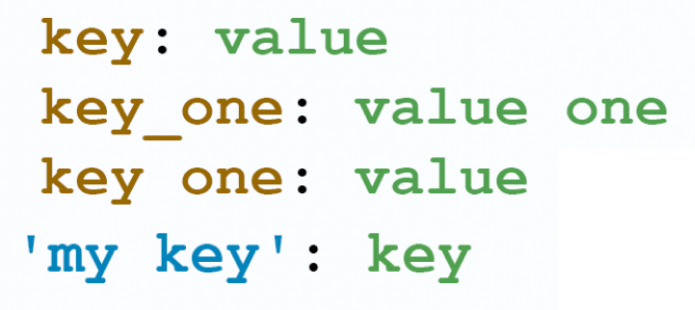

All these abbreviations are referred to data serialization formats
Our goals for today's lecture
JavaScriptObjectNotation - is a language-independent, text-based representation of structured data based on JavaScript.
It as developed by Douglas Crockford in 2000.
JSON filenames use the extension .json
(values of this types will be converted to string)
YAML - firstly was said to mean Yet Another Markup Language, but later was renamed as YAML Ain't Markup Language to distinguish its purpose as data-oriented, rather than document markup
It was developed by Clark Evans in 2001
YAML is more frequently used as a format for different configuration files
YAML filenames use the extensions .yaml or .yml
Common syntax features:
Note, that compound keys (which consists of 2 and more words) can use a space, however this syntax variant is not recommended
Strings are delimited with indentation with optional modifiers to preserve (|) or fold (>) newlines
(variable or reference)
TOML - Tom’s Obvious, Minimal Language
Is was developed by Tom Preston-Werner in 2013
TOML filenames use the extension .toml
TOML's syntax primarily consists of key = "value" pairs, [section names], and # comments
| Criteria/Name | JSON | YAML | TOML |
|---|---|---|---|
| human readble | + | ++ | ++ |
| memory space | + | +++ | ++ |
| comments | - | + | + |
| variables | - | + | - |
| security | ++ | + | + |
| supportion |
|
|
|
| special features |
|
|
|